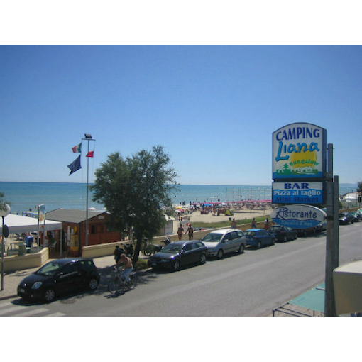
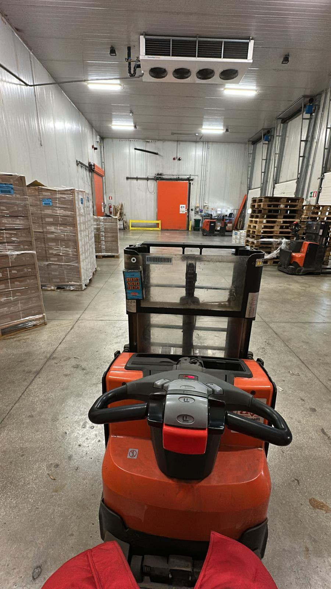
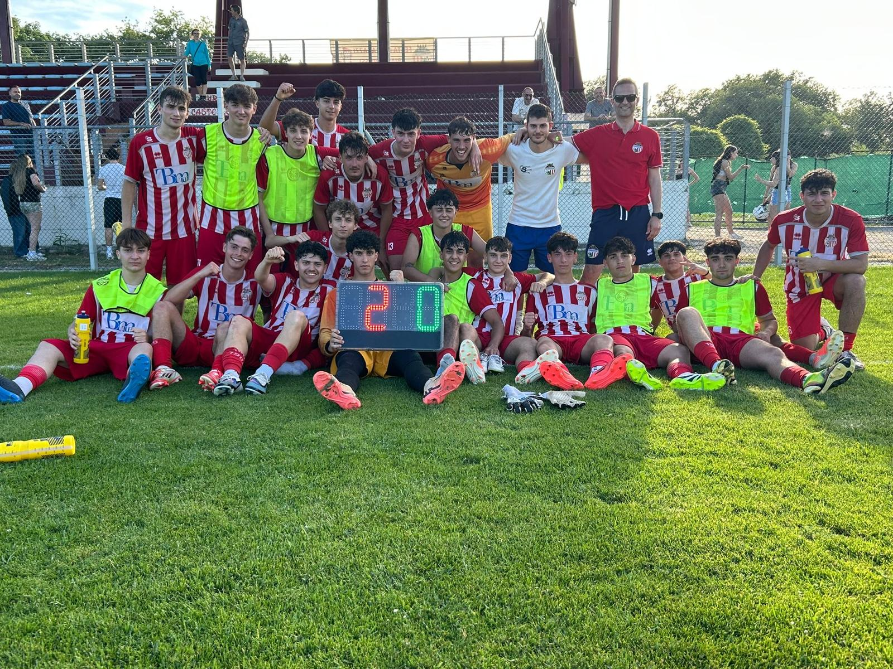

Portfolio Esame di Stato
Clicca il pulsante per scaricare il curriculum completo in formato PDF.
Scarica CV (PDF)Nome e Cognome: Riccardo Ciarmatori
Data di nascita: 12 Settembre 2007
Nazionalità: Italiana
Istituto: ANTF02301E - Guglielmo Marconi
Frequento l'IIS Marconi Pieralisi nell'indirizzo Tecnico - Informatica e Telecomunicazioni (livello EQF 4).
Durante il percorso scolastico ho sviluppato competenze nell'ambito della programmazione, dello sviluppo web, delle reti informatiche e della gestione di database.
Anno scolastico 2023/24
Struttura: I.I.S. "Marconi Pieralisi"
Ore in aula: 8 — Ore totali: 8
Anno scolastico 2024/25
Struttura: Dogma Systems SRL
Ore presso la struttura: 200 — Ore totali: 200
• HTML e CSS
• JavaScript
• PHP e SQL
• Gestione database
• Sistemi e reti
• Configurazione e gestione sistemi di elaborazione dati
• Sviluppo applicazioni informatiche per reti locali o servizi a distanza
• Lavoro di squadra
• Problem solving
• Comunicazione in lingua inglese (livello B2 QCER)
• Gestione per progetti
• Redazione di relazioni tecniche
Addetto Reception e Supporto Operativo
Camping Liana - Fabio Ciarmatori | Senigallia | 28/06/2025 - 31/08/2025
Durante la stagione estiva mi sono occupato dell'accoglienza clienti e della gestione delle attività di reception, seguendo le procedure di check-in e check-out e fornendo assistenza agli ospiti durante il soggiorno. Ho collaborato nelle attività operative e nei lavori manuali necessari al buon funzionamento della struttura, lavorando in team in un ambiente dinamico e a contatto diretto con il pubblico. All'interno dei magazzini frigoriferi mi sono occupato di stoccare qualsiasi tipo di alimento, gestendo deposito e movimentazione di prodotti surgelati, refrigerati a 0/+4°C e conservabili a temperatura ambiente.

Operatore di Magazzino Frigorifero
Orletti SRL | Via S. Ubaldo 30, Monsano (AN) | 09/06/2025 - 05/09/2025
Orletti SRL è un'azienda specializzata nello stoccaggio e nella movimentazione di prodotti alimentari nel Centro Italia, con sede a Monsano (AN). Dispone di cinque celle frigorifere a diverse temperature e due magazzini per il deposito della merce, operando nel pieno rispetto delle normative HACCP.
Durante l'esperienza lavorativa mi sono occupato delle seguenti attività:
• Stoccaggio prodotti surgelati fino a -25°C: gestione e movimentazione di merci in celle a temperatura molto bassa, nel rispetto delle procedure di sicurezza alimentare.
• Stoccaggio prodotti freschi da 0°C a +4°C: deposito e movimentazione di prodotti refrigerati, con attenzione al mantenimento della catena del freddo.
• Stoccaggio prodotti secchi da +12°C a +18°C: gestione di prodotti conservabili a temperatura ambiente nei magazzini dedicati.
• Stoccaggio imballaggi alimentari: deposito e organizzazione di imballi quali cartoni, buste e fascette destinati a prodotti alimentari.
• Picking: prelievo e smistamento della merce in magazzino, preparazione degli ordini per la spedizione.
• Facchinaggio: movimentazione fisica delle merci, gestione del carico e scarico dei prodotti all'interno della struttura.
Questa esperienza mi ha permesso di acquisire familiarità con le procedure operative di un magazzino logistico professionale, di lavorare in team in un ambiente fisicamente impegnativo e di comprendere l'importanza del rispetto delle norme igienico-sanitarie nel settore alimentare.

Calciatore – U.S. Castelfrettese A.S.D.
Castelferretti | 18/08/2025 - 06/06/2026
Faccio parte della U.S. Castelfrettese, partecipando sia alla categoria Juniores sia alla Prima Squadra nel campionato di Promozione. L'attività sportiva richiede costanza, disciplina e capacità di gestire allenamenti, preparazione atletica e competizioni ufficiali. Questa esperienza mi ha permesso di sviluppare spirito di squadra, senso di responsabilità e capacità di lavorare in gruppo, imparando a collaborare con compagni e staff tecnico per il raggiungimento degli obiettivi comuni. Il contesto agonistico mi ha inoltre aiutato a migliorare la gestione della pressione, la concentrazione e la determinazione.

Dopo il diploma vorrei entrare nel mondo del lavoro per mettere in pratica le competenze acquisite durante il percorso scolastico e continuare a crescere professionalmente.